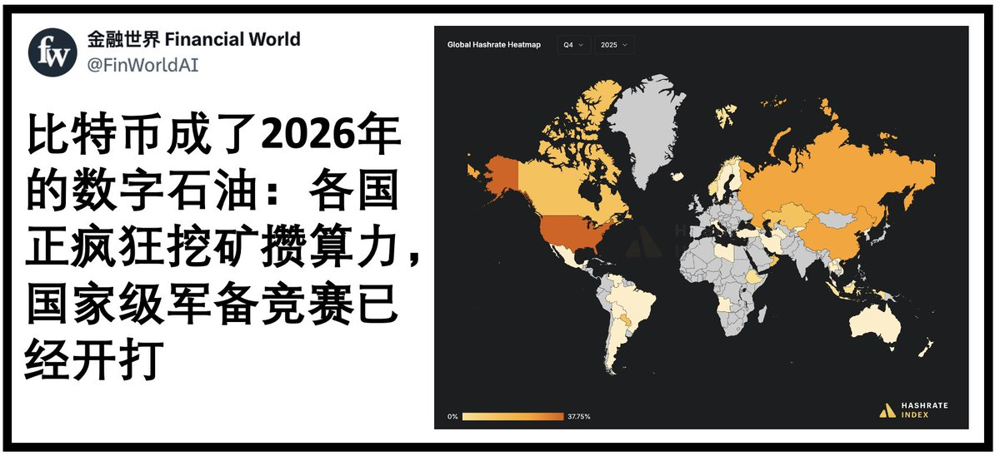

御坂 O.o 雪春📕 (掉fo版)（雪似梅花）
@0502railgun1949
所以香港才半默许这个东西
来自试图在世界比特币市场上还能抢一个位置
但是中国大陆其实有这个优势，但是由于对虚拟币矿场的打压，其实就。。。。
大陆主要是怕国内的钱从这个地方跑出去

金融世界 Financial World
@FinWorldAI
比特币的初衷是去中心化且政治中立的协议，但它正加速演变成各国手中的战略武器。随着各国政府开始将能源市场武器化，比特币正从一种中立协议转变为国家间博弈的战略资产，其地位正如石油在资源争夺战中扮演的角色一样。由于各国政府开始利用过剩能源将哈希值转化为政治影响力，现在的比特币挖矿已成为 https://t.co/0TcPsqY5Tq